ink #2C303C
near-black #1E2029
tmavá holo záře
oficiální 124:3 na paper · stejná poloha maskota
Vítěz poroty D3 (výřez + záře, 2 ze 3 hlasů) s úpravami poroty: konce řezu zaoblené r 5 jako vlastní zakončení písmen (bylo 2,9), záře bez ostré hrany nahoře, vnitřní vrstva záře slabší, v malé verzi mint/sky halo jiskry místo šedého kolečka a navíc verze s ink obrysem na silnou záři. Písmena mist #F5F4FB, „a“ a „r“ vyříznuté rovnoměrnou mezerou kolem ležícího maskota. Maskot, obličej, plamínek i ✦ jsou 1:1 z 124:3.


Hlavička 120 px na ink. Pod 120 px šířky wordmark nepoužívat; na avatar a favicon patří hlava maskota (assets/img/poses/head.svg).
120 px na 1× displeji, skutečné pixely ×4